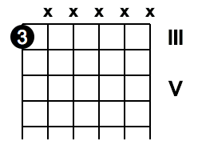
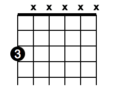

Added an optional "{FRET_NUMBER}" to the end of Custom Chord Notation to be able to force from wich fret to start drawing the pictures
without
%3/3.X/X.X/X.X/X.X/X.X/X[name]

with forced to start drawing from first fret
%3/3.X/X.X/X.X/X.X/X.X/X[my_custom_one]{0}
